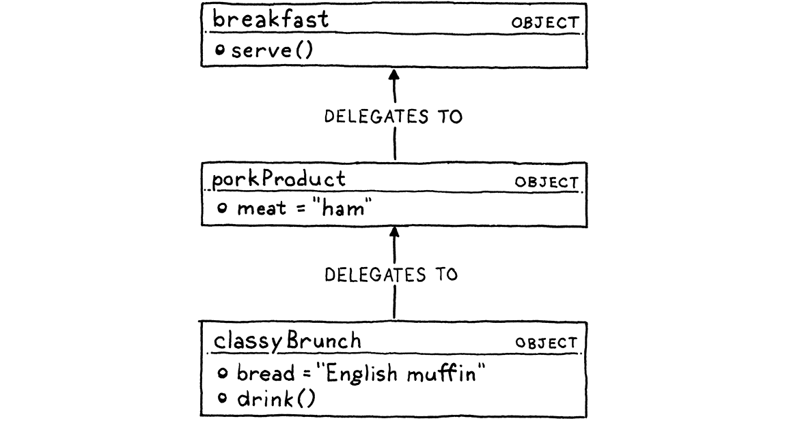

Lox语言
What nicer thing can you do for somebody than make them breakfast? 还有什么能比给别人做顿早餐，更能体现你对他的好呢？ Anthony Bourdain
We’ll spend the rest of this book illuminating every dark and sundry corner of the Lox language, but it seems cruel to have you immediately start grinding out code for the interpreter without at least a glimpse of what we’re going to end up with. 我们将用本书的其余部分来照亮Lox语言的每一个黑暗和杂乱的角落，但如果让你在对目标一无所知的情况下，就立即开始为解释器编写代码，这似乎很残忍。
At the same time, I don’t want to drag you through reams of language lawyering and specification-ese before you get to touch your text editor. So this will be a gentle, friendly introduction to Lox. It will leave out a lot of details and edge cases. We’ve got plenty of time for those later. 与此同时，我也不想在您编码之前，就把您拖入大量的语言和规范术语中。所以这是一个温和、友好的Lox介绍，它会省去很多细节和边缘情况。后面我们有足够的时间来解决这些问题。
3 . 1Hello, Lox
Here’s your very first taste of Lox: 下面是你对Lox的第一次体验：
// Your first Lox program! print "Hello, world!";
As that // line comment and the trailing semicolon imply, Lox’s syntax is a
member of the C family. (There are no parentheses around the string because
print is a built-in statement, and not a library function.)
正如那句//行注释和后面的分号所暗示的那样，Lox的语法是C语言家族的成员之一。（因为print是一个内置语句，而不是库函数，所以字符串周围没有括号。）
Now, I won’t claim that C has a great syntax. If we wanted something elegant, we’d probably mimic Pascal or Smalltalk. If we wanted to go full Scandinavian-furniture-minimalism, we’d do a Scheme. Those all have their virtues. 这里，我并不是想说C语言具有出色的语法。如果我们想要一些优雅的东西，我们可能会模仿Pascal或Smalltalk。如果我们想要完全体现斯堪的纳维亚家具的极简主义风格，我们会实现一个Scheme。这些都有其优点。
What C-like syntax has instead is something you’ll often find more valuable in a language: familiarity. I know you are already comfortable with that style because the two languages we’ll be using to implement Lox—Java and C—also inherit it. Using a similar syntax for Lox gives you one less thing to learn. 但是，类C的语法所具有的反而是一些在语言中更有价值的东西：熟悉度。我知道你已经对这种风格很熟悉了，因为我们将用来实现Lox的两种语言—Java和C—也继承了这种风格。让Lox使用类似的语法，你就少了一件需要学习的事情。
3 . 2高级语言
While this book ended up bigger than I was hoping, it’s still not big enough to fit a huge language like Java in it. In order to fit two complete implementations of Lox in these pages, Lox itself has to be pretty compact. 虽然这本书最终比我所希望的要大，但它仍然不够大，无法将Java这样一门庞大的语言放进去。为了在有限的篇幅里容纳两个完整的Lox实现，Lox本身必须相当紧凑。
When I think of languages that are small but useful, what comes to mind are high-level “scripting” languages like JavaScript, Scheme, and Lua. Of those three, Lox looks most like JavaScript, mainly because most C-syntax languages do. As we’ll learn later, Lox’s approach to scoping hews closely to Scheme. The C flavor of Lox we’ll build in Part III is heavily indebted to Lua’s clean, efficient implementation. 当我想到那些小而有用的语言时，我脑海中浮现的是像JavaScript、Scheme和Lua这样的高级 “脚本” 语言。在这三种语言中，Lox看起来最像JavaScript，主要是因为大多数c语法语言都是这样的。稍后我们将了解到，Lox的范围界定方法与Scheme密切相关。 我们将在第三部分中构建的C风格的Lox很大程度上借鉴了Lua的干净、高效的实现。
Lox shares two other aspects with those three languages: Lox与这三种语言有两个共同之处：
3 . 2 . 1动态类型
Lox is dynamically typed. Variables can store values of any type, and a single variable can even store values of different types at different times. If you try to perform an operation on values of the wrong type—say, dividing a number by a string—then the error is detected and reported at runtime. Lox是动态类型的。变量可以存储任何类型的值，单个变量甚至可以在不同时间存储不同类型的值。如果尝试对错误类型的值执行操作（例如，将数字除以字符串），则会在运行时检测到错误并报告。
There are plenty of reasons to like static types, but they don’t outweigh the pragmatic reasons to pick dynamic types for Lox. A static type system is a ton of work to learn and implement. Skipping it gives you a simpler language and a shorter book. We’ll get our interpreter up and executing bits of code sooner if we defer our type checking to runtime. 喜欢静态类型的原因有很多，但它们都比不上为Lox选择动态类型的实际原因。静态类型系统需要学习和实现大量的工作。跳过它会让你的语言更简单，也可以让本书更短。如果我们将类型检查推迟到运行时，我们将可以更快地启动解释器并执行代码。
3 . 2 . 2自动内存管理
High-level languages exist to eliminate error-prone, low-level drudgery, and what
could be more tedious than manually managing the allocation and freeing of
storage? No one rises and greets the morning sun with, “I can’t wait to figure
out the correct place to call free() for every byte of memory I allocate
today!”
高级语言的存在是为了消除容易出错的低级工作，还有什么比手动管理存储的分配和释放更繁琐的呢?没有人会抬起头来迎接早晨的阳光，“我迫不及待想找到正确的位置去调用free()方法，来释放掉今天我在内存中申请的每个字节！”
There are two main techniques for managing memory: reference counting and tracing garbage collection (usually just called garbage collection or GC). Ref counters are much simpler to implement—I think that’s why Perl, PHP, and Python all started out using them. But, over time, the limitations of ref counting become too troublesome. All of those languages eventually ended up adding a full tracing GC, or at least enough of one to clean up object cycles. 有两种主要的内存管理技术：引用计数和跟踪垃圾收集（通常仅称为 “垃圾收集” 或 “GC”）。 引用计数器的实现要简单得多—我想这就是为什么Perl、PHP和Python一开始都使用该方式的原因。但是，随着时间的流逝，引用计数的限制变得太麻烦了。 所有这些语言最终都添加了完整的跟踪GC或至少一种足以清除对象循环引用的管理方式。
Tracing garbage collection has a fearsome reputation. It is a little harrowing working at the level of raw memory. Debugging a GC can sometimes leave you seeing hex dumps in your dreams. But, remember, this book is about dispelling magic and slaying those monsters, so we are going to write our own garbage collector. I think you’ll find the algorithm is quite simple and a lot of fun to implement. 追踪式垃圾收集是一个听起来就很可怕的名称。在原始内存的层面上工作是有点折磨人的。调试GC的时候会让你在梦中也能看到hex dumps。但是，请记住，这本书是关于驱散魔法和杀死那些怪物的，所以我们要写出自己的垃圾收集器。我想你会发现这个算法相当简单，而且实现起来很有趣。
3 . 3数据类型
In Lox’s little universe, the atoms that make up all matter are the built-in data types. There are only a few: 在Lox的小宇宙中，构成所有物质的原子是内置的数据类型。只有几个：
-
Booleans. You can’t code without logic and you can’t logic without Boolean values. “True” and “false”, the yin and yang of software. Unlike some ancient languages that repurpose an existing type to represent truth and falsehood, Lox has a dedicated Boolean type. We may be roughing it on this expedition, but we aren’t savages. Booleans—没有逻辑就不能编码，没有布尔值也就没有逻辑。 “真”和“假”，就是软件的阴与阳。 与某些古老的语言重新利用已有类型来表示真假不同，Lox具有专用的布尔类型。在这次探险中，我们可能会有些粗暴，但我们不是野蛮人。 显然，有两个布尔值，每个值都有一个字面量：
There are two Boolean values, obviously, and a literal for each one. 显然，有两个布尔值，每个值都有一个字面量：
true; // Not false. false; // Not *not* false.
-
Numbers. Lox has only one kind of number: double-precision floating point. Since floating-point numbers can also represent a wide range of integers, that covers a lot of territory, while keeping things simple. Numbers—Lox只有一种数字：双精度浮点数。 由于浮点数还可以表示各种各样的整数，因此可以覆盖很多领域，同时保持简单。
Full-featured languages have lots of syntax for numbers—hexadecimal, scientific notation, octal, all sorts of fun stuff. We’ll settle for basic integer and decimal literals. 功能齐全的语言具有多种数字语法-十六进制，科学计数法，八进制和各种有趣的东西。 我们只使用基本的整数和十进制文字：
1234; // An integer. 12.34; // A decimal number.
-
Strings. We’ve already seen one string literal in the first example. Like most languages, they are enclosed in double quotes. Strings—在第一个示例中，我们已经看到一个字符串字面量。 与大多数语言一样，它们用双引号引起来：
"I am a string"; ""; // The empty string. "123"; // This is a string, not a number.
As we’ll see when we get to implementing them, there is quite a lot of complexity hiding in that innocuous sequence of characters. 我们在实现它们时会看到，在这个看起来无害的字符序列中隐藏了相当多的复杂性。
-
Nil. There’s one last built-in value who’s never invited to the party but always seems to show up. It represents “no value”. It’s called “null” in many other languages. In Lox we spell it
nil. (When we get to implementing it, that will help distinguish when we’re talking about Lox’snilversus Java or C’snull.) Nil—还有最后一个内置数据，它从未被邀请参加聚会，但似乎总是会出现。 它代表“没有价值”。 在许多其他语言中称为“null”。 在Lox中，我们将其拼写为nil。 （当我们实现它时，这将有助于区分Lox的nil与Java或C的null）There are good arguments for not having a null value in a language since null pointer errors are the scourge of our industry. If we were doing a statically typed language, it would be worth trying to ban it. In a dynamically typed one, though, eliminating it is often more annoying than having it. 有一些很好的理由表明在语言中不使用空值是合理的，因为空指针错误是我们行业的祸害。如果我们使用的是静态类型语言，那么禁止它是值得的。然而，在动态类型中，消除它往往比保留它更加麻烦。
3 . 4表达式
If built-in data types and their literals are atoms, then expressions must be the molecules. Most of these will be familiar. 如果内置数据类型及其字面量是原子，那么表达式必须是分子。其中大部分大家都很熟悉。
3 . 4 . 1算术运算
Lox features the basic arithmetic operators you know and love from C and other languages: Lox具备了您从C和其他语言中了解到的基本算术运算符：
add + me; subtract - me; multiply * me; divide / me;
The subexpressions on either side of the operator are operands. Because there are two of them, these are called binary operators. (It has nothing to do with the ones-and-zeroes use of “binary”.) Because the operator is fixed in the middle of the operands, these are also called infix operators (as opposed to prefix operators where the operator comes before the operands, and postfix where it comes after). 操作符两边的子表达式都是操作数。因为有两个操作数，它们被称为二元运算符(这与二进制的1和0二元没有关联)。由于操作符固定在操作数的中间，因此也称为中缀操作符，相对的，还有前缀操作符(操作符在操作数前面)和后缀操作符(操作符在操作数后面)。
One arithmetic operator is actually both an infix and a prefix one. The -
operator can also be used to negate a number.
有一个数学运算符既是中缀运算符也是前缀运算符，-运算符可以对数字取负：
-negateMe;
All of these operators work on numbers, and it’s an error to pass any other
types to them. The exception is the + operator—you can also pass it two
strings to concatenate them.
所有这些操作符都是针对数字的，将任何其他类型操作数传递给它们都是错误的。唯一的例外是+运算符—你也可以传给它两个字符串将它们串接起来。
3 . 4 . 2比较与相等
Moving along, we have a few more operators that always return a Boolean result. We can compare numbers (and only numbers), using Ye Olde Comparison Operators. 接下来，我们有几个返回布尔值的操作符。我们可以使用旧的比较操作符来比较数字(并且只能比较数字)：
less < than; lessThan <= orEqual; greater > than; greaterThan >= orEqual;
We can test two values of any kind for equality or inequality. 我们可以测试两个任意类型的值是否相等：
1 == 2; // false. "cat" != "dog"; // true.
Even different types. 即使是不同类型也可以：
314 == "pi"; // false.
Values of different types are never equivalent. 不同类型的值永远不会相等：
123 == "123"; // false.
I’m generally against implicit conversions. 我通常是反对隐式转换的。
3 . 4 . 3逻辑运算
The not operator, a prefix !, returns false if its operand is true, and vice
versa.
取非操作符，是前缀操作符!，如果操作数是true，则返回false，反之亦然：
!true; // false. !false; // true.
The other two logical operators really are control flow constructs in the guise
of expressions. An and expression determines if two
values are both true. It returns the left operand if it’s false, or the
right operand otherwise.
其他两个逻辑操作符实际上是表达式伪装下的控制流结构。and表达式用于确认两个操作数是否都是true。如果左侧操作数是false，则返回左侧操作数，否则返回右侧操作数：
true and false; // false. true and true; // true.
And an or expression determines if either of two values (or both) are true.
It returns the left operand if it is true and the right operand otherwise.
or表达式用于确认两个操作数中任意一个（或者都是）为true。如果左侧操作数为true，则返回左侧操作数，否则返回右侧操作数：
false or false; // false. true or false; // true.
The reason and and or are like control flow structures is that they
short-circuit. Not only does and return the left operand if it is false,
it doesn’t even evaluate the right one in that case. Conversely
(contrapositively?), if the left operand of an or is true, the right is
skipped.
and和 or之所以像控制流结构，是因为它们会短路。如果左操作数为假，and不仅会返回左操作数，在这种情况下，它甚至不会计算右操作数。反过来，(“相对的“?)如果or的左操作数为真，右操作数就会被跳过。
3 . 4 . 4优先级与分组
All of these operators have the same precedence and associativity that you’d
expect coming from C. (When we get to parsing, we’ll get way more precise
about that.) In cases where the precedence isn’t what you want, you can use ()
to group stuff.
所有这些操作符都具有与c语言相同的优先级和结合性(当我们开始解析时，会进行更详细的说明)。在优先级不满足要求的情况下，你可以使用()来分组：
var average = (min + max) / 2;
Since they aren’t very technically interesting, I’ve cut the remainder of the typical operator menagerie out of our little language. No bitwise, shift, modulo, or conditional operators. I’m not grading you, but you will get bonus points in my heart if you augment your own implementation of Lox with them. 我把其他典型的操作符从我们的小语言中去掉了，因为它们在技术上不是很有趣。没有位运算、移位、取模或条件运算符。我不是在给你打分，但如果你通过自己的方式来完成支持这些运算的Lox实现，你会在我心中得到额外的加分。
Those are the expression forms (except for a couple related to specific features that we’ll get to later), so let’s move up a level. 这些都是表达式形式(除了一些与我们将在后面介绍的特定特性相关的)，所以让我们继续。
3 . 5语句
Now we’re at statements. Where an expression’s main job is to produce a value, a statement’s job is to produce an effect. Since, by definition, statements don’t evaluate to a value, to be useful they have to otherwise change the world in some way—usually modifying some state, reading input, or producing output. 现在我们来看语句。表达式的主要作用是产生一个值，语句的主要作用是产生一个效果。由于根据定义，语句不求值，因此必须以某种方式改变世界（通常是修改某些状态，读取输入或产生输出）才能有用。
You’ve seen a couple of kinds of statements already. The first one was: 您已经看到了几种语句。 第一个是：
print "Hello, world!";
A print statement evaluates a single expression
and displays the result to the user. You’ve also seen some statements like:
print语句计算单个表达式并将结果显示给用户。 您还看到了一些语句，例如：
"some expression";
An expression followed by a semicolon (;) promotes the expression to
statement-hood. This is called (imaginatively enough), an expression
statement.
表达式后跟分号（;）可以将表达式提升为语句状态。这被称为(很有想象力)表达式语句。
If you want to pack a series of statements where a single one is expected, you can wrap them up in a block. 如果您想将一系列语句打包成一个语句，那么可以将它们打包在一个块中：
{
print "One statement.";
print "Two statements.";
}
Blocks also affect scoping, which leads us to the next section . . . 块还会影响作用域，我们将在下一节中进行说明。
3 . 6变量
You declare variables using var statements. If you omit the initializer, the variable’s value defaults to nil.
你可以使用var语句声明变量。如果你省略了初始化操作，变量的值默认为nil：
var imAVariable = "here is my value"; var iAmNil;
Once declared, you can, naturally, access and assign a variable using its name. 一旦声明完成，你自然就可以通过变量名对其进行访问和赋值：
var breakfast = "bagels"; print breakfast; // "bagels". breakfast = "beignets"; print breakfast; // "beignets".
I won’t get into the rules for variable scope here, because we’re going to spend a surprising amount of time in later chapters mapping every square inch of the rules. In most cases, it works like you would expect coming from C or Java. 我不会在这里讨论变量作用域的规则，因为我们在后面的章节中将会花费大量的时间来详细讨论这些规则。在大多数情况下，它的工作方式与您期望的C或Java一样。
3 . 7控制流
It’s hard to write useful programs if you can’t skip some code or execute some more than once. That means control flow. In addition to the logical operators we already covered, Lox lifts three statements straight from C. 如果你不能跳过某些代码，或者不能多次执行某些代码，就很难写出有用的程序。这意味着控制流。除了我们已经介绍过的逻辑运算符之外，Lox直接从C中借鉴了三条语句。
An if statement executes one of two statements based on some condition.
if语句根据某些条件执行两条语句中的一条：
if (condition) { print "yes"; } else { print "no"; }
A while loop executes the body repeatedly as long as
the condition expression evaluates to true.
只要条件表达式的计算结果为true，while循环就会重复执行循环体：
var a = 1; while (a < 10) { print a; a = a + 1; }
Finally, we have for loops.
最后，还有for循环：
for (var a = 1; a < 10; a = a + 1) { print a; }
This loop does the same thing as the previous while loop. Most modern
languages also have some sort of for-in or
foreach loop for explicitly iterating over various sequence types. In a real
language, that’s nicer than the crude C-style for loop we got here. Lox keeps
it basic.
这个循环与之前的 while 循环做同样的事情。大多数现代语言也有某种for-in或foreach循环，用于显式迭代各种序列类型。在真正的语言中，这比我们在这里使用的粗糙的C-风格for循环要好。Lox只保持了它的基本功能。
3 . 8函数
A function call expression looks the same as it does in C. 函数调用表达式与C语言中一样：
makeBreakfast(bacon, eggs, toast);
You can also call a function without passing anything to it. 你也可以在不传递任何参数的情况下调用一个函数：
makeBreakfast();
Unlike in, say, Ruby, the parentheses are mandatory in this case. If you leave them off, the name doesn’t call the function, it just refers to it. 与Ruby不同的是，在本例中括号是强制性的。如果你把它们去掉，就不会调用函数，只是指向该函数。
A language isn’t very fun if you can’t define your own functions. In Lox, you do
that with fun.
如果你不能定义自己的函数，一门语言就不能算有趣。在Lox里，你可以通过fun完成：
fun printSum(a, b) { print a + b; }
Now’s a good time to clarify some terminology. Some people throw around “parameter” and “argument” like they are interchangeable and, to many, they are. We’re going to spend a lot of time splitting the finest of downy hairs around semantics, so let’s sharpen our words. From here on out:
-
An argument is an actual value you pass to a function when you call it. So a function call has an argument list. Sometimes you hear actual parameter used for these.
-
A parameter is a variable that holds the value of the argument inside the body of the function. Thus, a function declaration has a parameter list. Others call these formal parameters or simply formals.
现在是澄清一些术语的好时机。有些人把 “parameter” 和 “argument” 混为一谈，好像它们可以互换，而对许多人来说，它们确实可以互换。我们要花很多时间围绕语义学来对其进行分辨，所以让我们在这里把话说清楚：
- argument是你在调用函数时传递给它的实际值。所以一个函数调用有一个argument列表。有时你会听到有人用实际参数指代这些参数。
- parameter是一个变量，用于在函数的主体里面存放参数的值。因此，一个函数声明有一个parameter列表。也有人把这些称为形式参数或者干脆称为形参。
The body of a function is always a block. Inside it, you can return a value
using a return statement.
函数体总是一个块。在其中，您可以使用return语句返回一个值：
fun returnSum(a, b) { return a + b; }
If execution reaches the end of the block without hitting a return, it
implicitly returns nil.
如果执行到达代码块的末尾而没有return语句，则会隐式返回nil。
3 . 8 . 1闭包
Functions are first class in Lox, which just means they are real values that you can get a reference to, store in variables, pass around, etc. This works: 在Lox中，函数是一等公民，这意味着它们都是真实的值，你可以对这些值进行引用、存储在变量中、传递等等。下面的代码是有效的：
fun addPair(a, b) { return a + b; } fun identity(a) { return a; } print identity(addPair)(1, 2); // Prints "3".
Since function declarations are statements, you can declare local functions inside another function. 由于函数声明是语句，所以可以在另一个函数中声明局部函数：
fun outerFunction() { fun localFunction() { print "I'm local!"; } localFunction(); }
If you combine local functions, first-class functions, and block scope, you run into this interesting situation: 如果将局部函数、头等函数和块作用域组合在一起，就会遇到这种有趣的情况：
fun returnFunction() { var outside = "outside"; fun inner() { print outside; } return inner; } var fn = returnFunction(); fn();
Here, inner() accesses a local variable declared outside of its body in the
surrounding function. Is this kosher? Now that lots of languages have borrowed
this feature from Lisp, you probably know the answer is yes.
在这里，inner()访问了在其函数体外的外部函数中声明的局部变量。这样可行吗?现在很多语言都从Lisp借鉴了这个特性，你应该也知道答案是肯定的。
For that to work, inner() has to “hold on” to references to any surrounding
variables that it uses so that they stay around even after the outer function
has returned. We call functions that do this closures. These days, the term is often used for any
first-class function, though it’s sort of a misnomer if the function doesn’t
happen to close over any variables.
要做到这一点，inner()必须“保留”对它使用的任何周围变量的引用，这样即使在外层函数返回之后，这些变量仍然存在。我们把能做到这一点的函数称为闭包。现在，这个术语经常被用于任何头类函数，但是如果函数没有在任何变量上闭包，那就有点用词不当了。
As you can imagine, implementing these adds some complexity because we can no longer assume variable scope works strictly like a stack where local variables evaporate the moment the function returns. We’re going to have a fun time learning how to make these work correctly and efficiently. 可以想象，实现这些会增加一些复杂性，因为我们不能再假定变量作用域严格地像堆栈一样工作，在函数返回时局部变量就消失了。我们将度过一段有趣的时间来学习如何使这些工作，并有效地做到这一点。
3 . 9类
Since Lox has dynamic typing, lexical (roughly, “block”) scope, and closures, it’s about halfway to being a functional language. But as you’ll see, it’s also about halfway to being an object-oriented language. Both paradigms have a lot going for them, so I thought it was worth covering some of each. 因为Lox具有动态类型、词法(粗略地说，就是块)作用域和闭包，所以它离函数式语言只有一半的距离。但正如您将看到的，它离成为一种面向对象的语言也有一半的距离。这两种模式都有很多优点，所以我认为有必要分别介绍一下。
Since classes have come under fire for not living up to their hype, let me first explain why I put them into Lox and this book. There are really two questions: 类因为没有达到其宣传效果而受到抨击，所以让我先解释一下为什么我把它们放到Lox和这本书中。这里实际上有两个问题：
3 . 9 . 1为什么任何语言都想要面向对象？
Now that object-oriented languages like Java have sold out and only play arena shows, it’s not cool to like them anymore. Why would anyone make a new language with objects? Isn’t that like releasing music on 8-track? 现在像Java这样的面向对象的语言已经销声匿迹了，只能在舞台上表演，喜欢它们已经不酷了。为什么有人要用对象来做一门新的语言呢？这不就像用磁带发行音乐一样吗？
It is true that the “all inheritance all the time” binge of the ’90s produced some monstrous class hierarchies, but object-oriented programming (OOP) is still pretty rad. Billions of lines of successful code have been written in OOP languages, shipping millions of apps to happy users. Likely a majority of working programmers today are using an object-oriented language. They can’t all be that wrong. 90年代的 “一直都是继承” 的狂潮确实产生了一些畸形的类层次结构，但面向对象的编程还是很流行的。数十亿行成功的代码都是用OOP语言编写的，为用户提供了数百万个应用程序。很可能今天大多数在职程序员都在使用面向对象语言。他们不可能都错得那么离谱。
In particular, for a dynamically typed language, objects are pretty handy. We need some way of defining compound data types to bundle blobs of stuff together. 特别是，对于动态类型语言来说，对象是非常方便的。我们需要某种方式来定义复合数据类型，用来将一堆数据组合在一起。
If we can also hang methods off of those, then we avoid the need to prefix all
of our functions with the name of the data type they operate on to avoid
colliding with similar functions for different types. In, say, Racket, you end
up having to name your functions like hash-copy (to copy a hash table) and
vector-copy (to copy a vector) so that they don’t step on each other. Methods
are scoped to the object, so that problem goes away.
如果我们也能把方法挂在这些对象上，那么我们就不需要把函数操作的数据类型的名字作为函数名称的前缀，以避免与不同类型的类似函数发生冲突。比如说，在Racket中，你最终不得不将你的函数命名为hash-copy(复制一个哈希表)和vector-copy(复制一个向量)，这样它们就不会互相覆盖。方法的作用域是对象，所以这个问题就不存在了。
3 . 9 . 2为什么Lox是面向对象的？
I could claim objects are groovy but still out of scope for the book. Most programming language books, especially ones that try to implement a whole language, leave objects out. To me, that means the topic isn’t well covered. With such a widespread paradigm, that omission makes me sad. 我可以说对象确实很吸引人，但仍然超出了本书的范围。大多数编程语言的书籍，特别是那些试图实现一门完整语言的书籍，都忽略了对象。对我来说，这意味着这个主题没有被很好地覆盖。对于如此广泛使用的范式，这种遗漏让我感到悲伤。
Given how many of us spend all day using OOP languages, it seems like the world could use a little documentation on how to make one. As you’ll see, it turns out to be pretty interesting. Not as hard as you might fear, but not as simple as you might presume, either. 鉴于我们很多人整天都在使用OOP语言，似乎这个世界应该有一些关于如何制作OOP语言的文档。正如你将看到的那样，事实证明这很有趣。没有你担心的那么难，但也没有你想象的那么简单。
3 . 9 . 3类还是原型？
When it comes to objects, there are actually two approaches to them, classes and prototypes. Classes came first, and are more common thanks to C++, Java, C#, and friends. Prototypes were a virtually forgotten offshoot until JavaScript accidentally took over the world. 当涉及对象时，实际上有两种方法，类和原型。 类最先出现，由于C++、Java、C#和其它近似语言的出现，类更加普遍。直到JavaScript意外地占领了世界之前，原型几乎是一个被遗忘的分支。
In class-based languages, there are two core concepts: instances and classes. Instances store the state for each object and have a reference to the instance’s class. Classes contain the methods and inheritance chain. To call a method on an instance, there is always a level of indirection. You look up the instance’s class and then you find the method there: 在基于类的语言中，有两个核心概念：实例和类。 实例存储每个对象的状态，并有一个对实例的类的引用。 类包含方法和继承链。要在实例上调用方法，总是存在一个中间层。您要先查找实例的类，然后在其中找到方法：

Prototype-based languages merge these two concepts. There are only objects—no classes—and each individual object may contain state and methods. Objects can directly inherit from each other (or “delegate to” in prototypal lingo): 基于原型的语言融合了这两个概念。这里只有对象—没有类，而且每个对象都可以包含状态和方法。对象之间可以直接继承（或者用原型语言的术语说是 “委托”）：
This means that in some ways prototypal languages are more fundamental than classes. They are really neat to implement because they’re so simple. Also, they can express lots of unusual patterns that classes steer you away from. 这意味着原型语言在某些方面比类更基础。 它们实现起来真的很整洁，因为它们很简单。另外，它们还可以表达很多不寻常的模式，而这些模式是类所不具备的。
But I’ve looked at a lot of code written in prototypal languages—including some of my own devising. Do you know what people generally do with all of the power and flexibility of prototypes? . . . They use them to reinvent classes. 但是我看过很多用原型语言写的代码—包括我自己设计的一些代码。你知道人们一般会怎么使用原型的强大功能和灵活性吗？ . . . 他们用它来重新发明类。
I don’t know why that is, but people naturally seem to prefer a class-based (Classic? Classy?) style. Prototypes are simpler in the language, but they seem to accomplish that only by pushing the complexity onto the user. So, for Lox, we’ll save our users the trouble and bake classes right in. 我不知道这是为什么，但人们自然而然地似乎更喜欢基于类的（经典？优雅？）风格。原型在语言中更简单，但它们似乎只是通过将复杂性推给用户来实现的。所以，对于Lox来说，我们将省去用户的麻烦，直接把类包含进去。
3 . 9 . 4Lox中的类
Enough rationale, let’s see what we actually have. Classes encompass a constellation of features in most languages. For Lox, I’ve selected what I think are the brightest stars. You declare a class and its methods like so: 理由已经说够了，来看看我们实际上拥有什么。在大多数语言中，类包含了一系列的特性。对于Lox，我选择了我认为最闪亮的一点。您可以像这样声明一个类及其方法：
class Breakfast { cook() { print "Eggs a-fryin'!"; } serve(who) { print "Enjoy your breakfast, " + who + "."; } }
The body of a class contains its methods. They look like function declarations
but without the fun keyword. When the class
declaration is executed, Lox creates a class object and stores that in a
variable named after the class. Just like functions, classes are first class in
Lox.
类的主体包含其方法。 它们看起来像函数声明，但没有fun关键字。 当类声明生效时，Lox将创建一个类对象，并将其存储在以该类命名的变量中。就像函数一样，类在Lox中也是一等公民：
// Store it in variables. var someVariable = Breakfast; // Pass it to functions. someFunction(Breakfast);
Next, we need a way to create instances. We could add some sort of new
keyword, but to keep things simple, in Lox the class itself is a factory
function for instances. Call a class like a function, and it produces a new
instance of itself.
接下来，我们需要一种创建实例的方法。我们可以添加某种new关键字，但为了简单起见，在Lox中，类本身是实例的工厂函数。像调用函数一样调用一个类，它会生成一个自己的新实例：
var breakfast = Breakfast(); print breakfast; // "Breakfast instance".
3 . 9 . 5实例化和初始化
Classes that only have behavior aren’t super useful. The idea behind object-oriented programming is encapsulating behavior and state together. To do that, you need fields. Lox, like other dynamically typed languages, lets you freely add properties onto objects. 只有行为的类不是非常有用。面向对象编程背后的思想是将行为和状态封装在一起。为此，您需要有字段。Lox和其他动态类型语言一样，允许您自由地向对象添加属性：
breakfast.meat = "sausage"; breakfast.bread = "sourdough";
Assigning to a field creates it if it doesn’t already exist. 如果一个字段不存在，那么对它进行赋值时就会先创建。
If you want to access a field or method on the current object from within a
method, you use good old this.
如果您想从方法内部访问当前对象上的字段或方法，可以使用this：
class Breakfast { serve(who) { print "Enjoy your " + this.meat + " and " + this.bread + ", " + who + "."; } // ... }
Part of encapsulating data within an object is ensuring the object is in a valid
state when it’s created. To do that, you can define an initializer. If your
class has a method named init(), it is called automatically when the object is
constructed. Any parameters passed to the class are forwarded to its
initializer.
在对象中封装数据的目的之一是确保对象在创建时处于有效状态。为此，你可以定义一个初始化器。如果您的类中包含一个名为init()的方法，则在构造对象时会自动调用该方法。传递给类的任何参数都会转发给它的初始化器：
class Breakfast { init(meat, bread) { this.meat = meat; this.bread = bread; } // ... } var baconAndToast = Breakfast("bacon", "toast"); baconAndToast.serve("Dear Reader"); // "Enjoy your bacon and toast, Dear Reader."
3 . 9 . 6继承
Every object-oriented language lets you not only define methods, but reuse them
across multiple classes or objects. For that, Lox supports single inheritance.
When you declare a class, you can specify a class that it inherits from using a less-than
(<) operator.
在每一种面向对象的语言中，你不仅可以定义方法，而且可以在多个类或对象中重用它们。为此，Lox支持单继承。当你声明一个类时，你可以使用小于(<)操作符指定它继承的类：
class Brunch < Breakfast { drink() { print "How about a Bloody Mary?"; } }
Here, Brunch is the derived class or subclass, and Breakfast is the base class or superclass. 这里，Brunch是派生类或子类，而Breakfast是基类或超类。父类中定义的每个方法对其子类也可用：
Every method defined in the superclass is also available to its subclasses. 超类中定义的每种方法也适用于子类。
var benedict = Brunch("ham", "English muffin"); benedict.serve("Noble Reader");
Even the init() method gets inherited. In practice,
the subclass usually wants to define its own init() method too. But the
original one also needs to be called so that the superclass can maintain its
state. We need some way to call a method on our own instance without hitting
our own methods.
即使是init()方法也会被继承。在实践中，子类通常也想定义自己的init()方法。但还需要调用原始的初始化方法，以便超类能够维护其状态。我们需要某种方式能够调用自己实例上的方法，而无需触发实例自身的方法。
As in Java, you use super for that.
与Java中一样，您可以使用super：
class Brunch < Breakfast { init(meat, bread, drink) { super.init(meat, bread); this.drink = drink; } }
That’s about it for object orientation. I tried to keep the feature set minimal. The structure of the book did force one compromise. Lox is not a pure object-oriented language. In a true OOP language every object is an instance of a class, even primitive values like numbers and Booleans. 这就是面向对象的内容。我尽量将功能设置保持在最低限度。本书的结构确实迫使我做了一个妥协。Lox不是一种纯粹的面向对象的语言。在真正的OOP语言中，每个对象都是一个类的实例，即使是像数字和布尔值这样的基本类型。
Because we don’t implement classes until well after we start working with the built-in types, that would have been hard. So values of primitive types aren’t real objects in the sense of being instances of classes. They don’t have methods or properties. If I were trying to make Lox a real language for real users, I would fix that. 因为我们开始使用内置类型很久之后才会实现类，所以这一点很难实现。因此，从类实例的意义上说，基本类型的值并不是真正的对象。它们没有方法或属性。如果以后我想让Lox成为真正的用户使用的语言，我会解决这个问题。
3 . 10标准库
We’re almost done. That’s the whole language, so all that’s left is the “core” or “standard” library—the set of functionality that is implemented directly in the interpreter and that all user-defined behavior is built on top of. 我们快结束了，这就是整个语言，所剩下的就是“核心”或“标准”库—这是一组直接在解释器中实现的功能集，所有用户定义的行为都是建立在此之上。
This is the saddest part of Lox. Its standard library goes beyond minimalism and
veers close to outright nihilism. For the sample code in the book, we only need
to demonstrate that code is running and doing what it’s supposed to do. For
that, we already have the built-in print statement.
这是Lox中最可悲的部分。它的标准库已经超过了极简主义，接近彻底的虚无主义。对于本书中的示例代码，我们只需要证明代码在运行，并且在做它应该做的事。为此，我们已经有了内置的print语句。
Later, when we start optimizing, we’ll write some benchmarks and see how long it
takes to execute code. That means we need to track time, so we’ll define one
built-in function, clock(), that returns the number of seconds since the
program started.
稍后，当我们开始优化时，我们将编写一些基准测试，看看执行代码需要多长时间。这意味着我们需要跟踪时间，因此我们将定义一个内置函数clock()，该函数会返回程序启动后的秒数。
And . . . that’s it. I know, right? It’s embarrassing. 嗯 . . . 就是这样。 我知道，有点尴尬，对吧？
If you wanted to turn Lox into an actual useful language, the very first thing you should do is flesh this out. String manipulation, trigonometric functions, file I/O, networking, heck, even reading input from the user would help. But we don’t need any of that for this book, and adding it wouldn’t teach you anything interesting, so I’ve left it out. 如果您想将Lox变成一门实际可用的语言，那么您应该做的第一件事就是对其充实。 字符串操作、三角函数、文件I / O、网络、扩展，甚至读取用户的输入都将有所帮助。但对于本书来说，我们不需要这些，而且加入这些也不会教给你任何有趣的东西，所以我把它省略了。
Don’t worry, we’ll have plenty of exciting stuff in the language itself to keep us busy. 别担心，这门语言本身就有很多精彩的内容让我们忙个不停。
Challenges
-
Write some sample Lox programs and run them (you can use the implementations of Lox in my repository). Try to come up with edge case behavior I didn’t specify here. Does it do what you expect? Why or why not? 1、编写一些示例Lox程序并运行它们(您可以使用我的Lox实现)。试着想出我在这里没有详细说明的边界情况。它是否按照期望运行？为什么？
-
This informal introduction leaves a lot unspecified. List several open questions you have about the language’s syntax and semantics. What do you think the answers should be? 2、这种非正式的介绍留下了很多未说明的东西。列出几个关于语言语法和语义的开放问题。你认为答案应该是什么？
-
Lox is a pretty tiny language. What features do you think it is missing that would make it annoying to use for real programs? (Aside from the standard library, of course.) 3、Lox是一种很小的语言。 您认为缺少哪些功能会使其不适用于实际程序？ （当然，除了标准库。）
Design Note: 表达式和语句
Lox has both expressions and statements. Some languages omit the latter. Instead, they treat declarations and control flow constructs as expressions too. These “everything is an expression” languages tend to have functional pedigrees and include most Lisps, SML, Haskell, Ruby, and CoffeeScript.
To do that, for each “statement-like” construct in the language, you need to decide what value it evaluates to. Some of those are easy:
-
An
ifexpression evaluates to the result of whichever branch is chosen. Likewise, aswitchor other multi-way branch evaluates to whichever case is picked. -
A variable declaration evaluates to the value of the variable.
-
A block evaluates to the result of the last expression in the sequence.
Some get a little stranger. What should a loop evaluate to? A while loop in
CoffeeScript evaluates to an array containing each element that the body
evaluated to. That can be handy, or a waste of memory if you don’t need the
array.
You also have to decide how these statement-like expressions compose with other expressions—you have to fit them into the grammar’s precedence table. For example, Ruby allows:
puts 1 + if true then 2 else 3 end + 4
Is this what you’d expect? Is it what your users expect? How does this affect
how you design the syntax for your “statements”? Note that Ruby has an explicit
end to tell when the if expression is complete. Without it, the + 4 would
likely be parsed as part of the else clause.
Turning every statement into an expression forces you to answer a few hairy
questions like that. In return, you eliminate some redundancy. C has both blocks
for sequencing statements, and the comma operator for sequencing expressions. It
has both the if statement and the ?: conditional operator. If everything was
an expression in C, you could unify each of those.
Languages that do away with statements usually also feature implicit returns—a function automatically returns whatever value its body evaluates to without
need for some explicit return syntax. For small functions and methods, this is
really handy. In fact, many languages that do have statements have added syntax
like => to be able to define functions whose body is the result of evaluating
a single expression.
But making all functions work that way can be a little strange. If you aren’t careful, your function will leak a return value even if you only intend it to produce a side effect. In practice, though, users of these languages don’t find it to be a problem.
For Lox, I gave it statements for prosaic reasons. I picked a C-like syntax for familiarity’s sake, and trying to take the existing C statement syntax and interpret it like expressions gets weird pretty fast.
Lox既有表达式也有语句。有些语言省略了后者。相对地，它们将声明和控制流结构也视为表达式。这类 “一切都是表达式” 的语言往往具有函数式的血统，包括大多数Lisps、SML、Haskell、Ruby和CoffeeScript。
要做到这一点，对于语言中的每一个 “类似于语句” 的构造，你需要决定它所计算的值是什么。其中有些很简单：
if表达式的计算结果是所选分支的结果。同样，switch或其他多路分支的计算结果取决于所选择的情况。- 变量声明的计算结果是变量的值。
- 块的计算结果是序列中最后一个表达式的结果。
有一些是比较复杂的。循环应该计算什么值？在CoffeeScript中，一个while循环计算结果为一个数组，其中包含了循环体中计算到的每个元素。这可能很方便，但如果你不需要这个数组，就会浪费内存。
您还必须决定这些类似语句的表达式如何与其他表达式组合，必须将它们放入语法的优先表中。例如，Ruby允许下面这种写法：
puts 1 + if true then 2 else 3 end + 4
这是你所期望的吗？这是你的用户所期望的吗？这对你如何设计 “语句” 的语法有什么影响？请注意，Ruby有一个显式的end关键字来表明if表达式结束。如果没有它，+4很可能会被解析为else子句的一部分。
把每个语句都转换成表达式会迫使你回答一些类似这样的复杂问题。作为回报，您消除了一些冗余。C语言中既有用于排序语句的块，以及用于排序表达式的逗号操作符。它既有if语句，也有?:条件操作符。如果在C语言中所有东西都是表达式，你就可以把它们统一起来。
取消了语句的语言通常还具有隐式返回的特点—函数自动返回其函数主体所计算得到的任何值，而不需要显式的return语法。对于小型函数和方法来说，这真的很方便。事实上，许多有语句的语言都添加了类似于 => 的语法，以便能够定义函数体是计算单一表达式结果的函数。
但是让所有的函数以这种方式工作可能有点奇怪。即使你只是想让函数产生副作用，如果不小心，函数也可能会泄露返回值。但实际上，这些语言的用户并不觉得这是一个问题。
对于Lox，我在其中添加语句是出于朴素的原因。为了熟悉起见，我选择了一种类似于C的语法，而试图把现有的C语句语法像表达式一样解释，会很快变得奇怪。